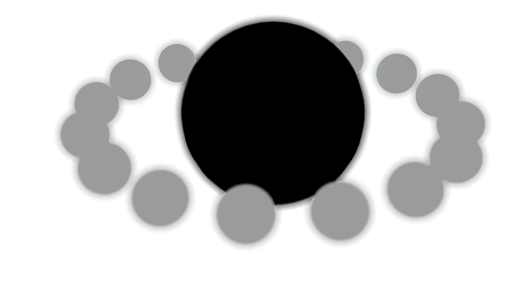

DepthOfFieldEffect QML Type
Post-processing effect implementation of a depth of field. More...
| Import Statement: | import |
| Since: | Kuesa 1.1 |
Properties
- focusDistance : float
- focusRange : float
- radius : float
Detailed Description
DepthOfFieldEffect implements an effect which simulates a more realistic camera behaviour, where only part of the scene is in-focus, and very far & very close objects are out-of-focus and thus blurred.
import Kuesa 1.1 as Kuesa
Kuesa.SceneEnity {
id: root
components: [
RenderSettings {
Kuesa.ForwardRenderer {
postProcessingEffects: [
DepthOfFieldEffect {
radius: 10.0
focusDistance: 100.0f
focusRange: 25.0f
}
]
}
}
]
...
}
Example

Depth-of-field effect applied on a Kuesa scene.
Property Documentation
adjusts the focal distance.
This adjusts the focal distance, that is, the objects at this distance from the camera will be focused; those too close or too far away will be blurred.
| Distance 5.0 | Distance 8.0 |
|---|---|
|  |
See also DepthOfFieldEffect::focusRange.
adjusts the breadth of the area which will be in focus.
This adjusts the size of the part of the scene which will be in focus. At 0.0, everything will be blurred. The bigger the value, the more of the scene will be in focus, centered on the focusDistance.
| Range 2.0 | Range 8.0 |
|---|---|
 |  |
See also DepthOfFieldEffect::focusDistance.
adjusts the radius of the depth of field effect.
The bigger the radius is, the more the out-of-focus objects will appear to be blurred.
| Radius 4.0 | Radius 42.0 |
|---|---|
 |  |